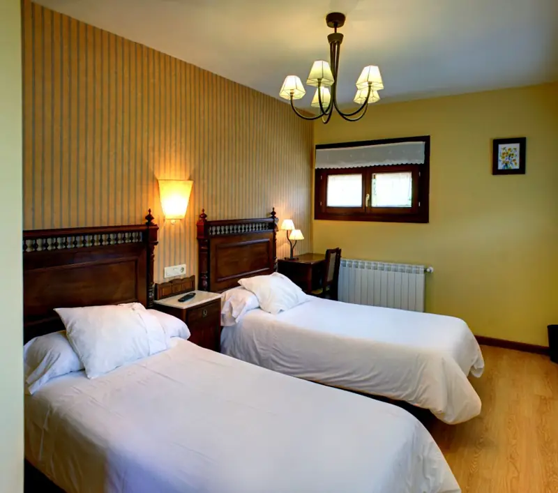
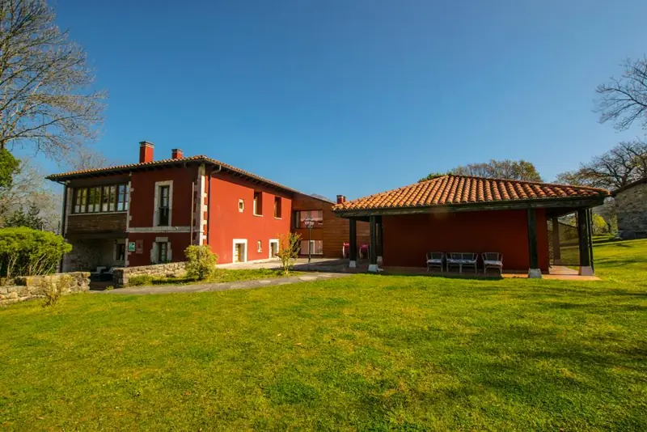
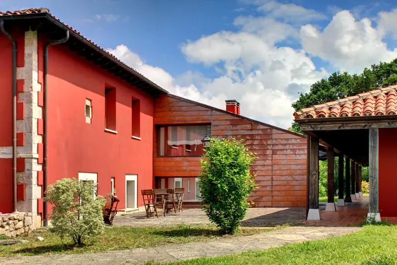
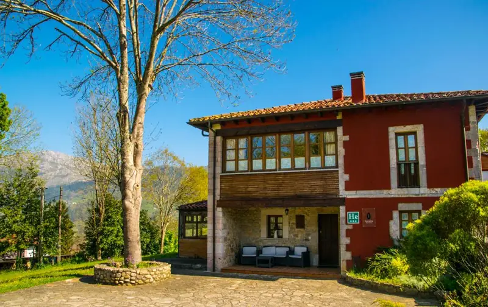
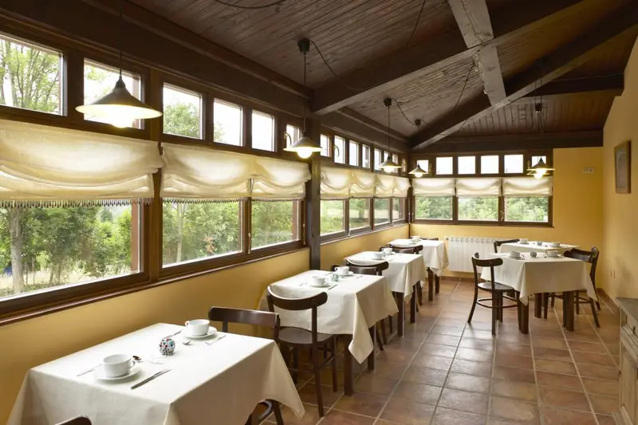
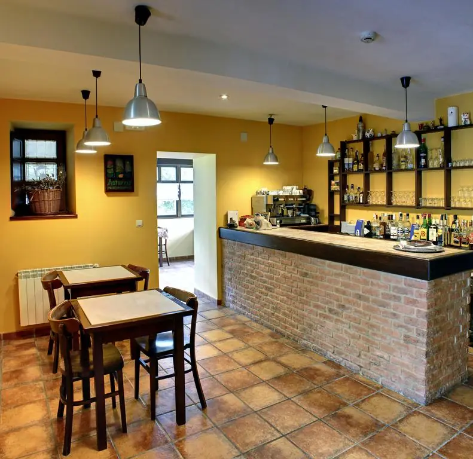
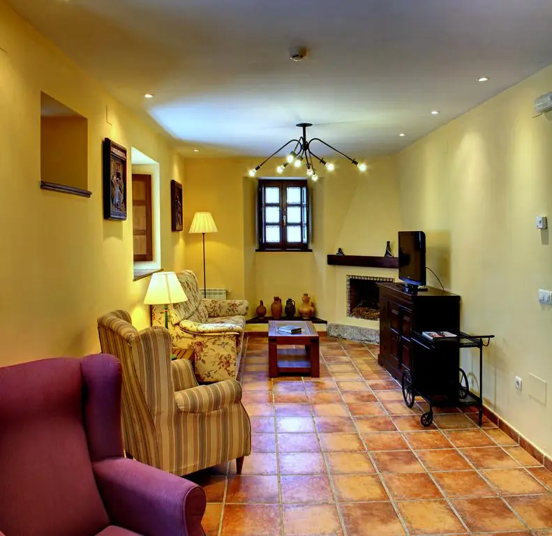
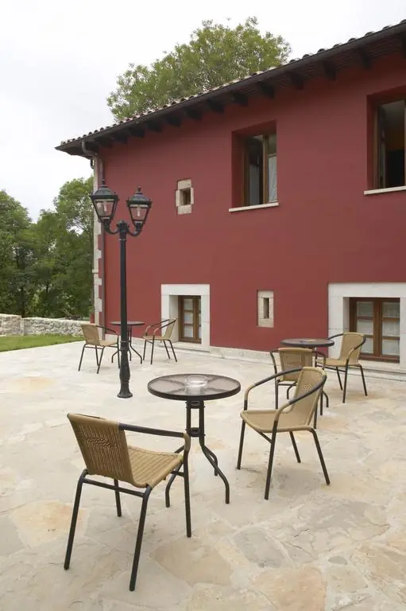
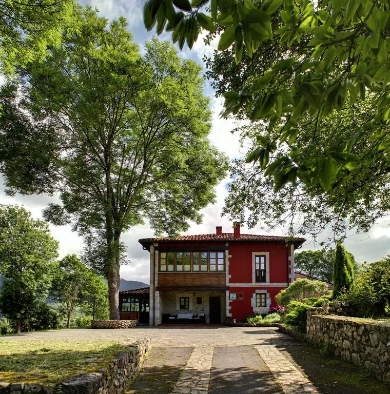
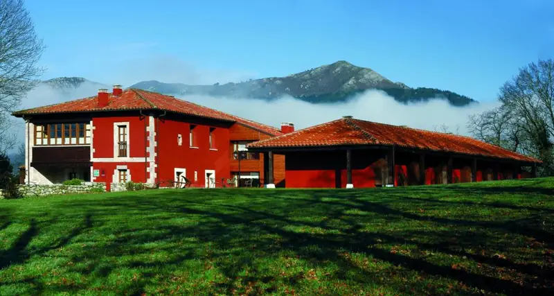
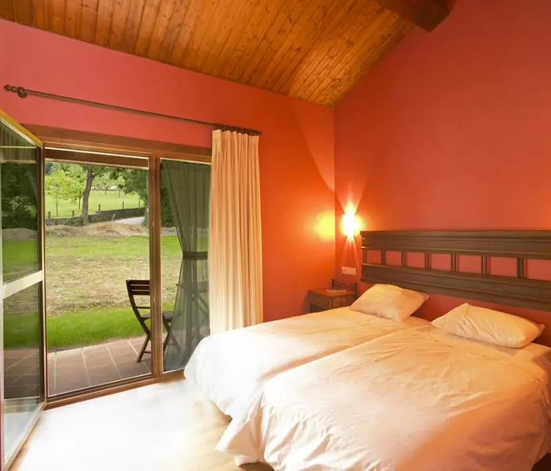
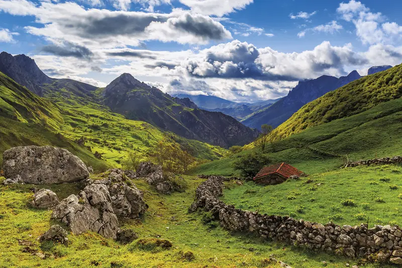
- Picos de Europa
- Covadonga
- Ruta del Cares
- Descenso del Sella en canoa
- Ribadesella
- Llanes
- Lastres
- Cueva de Tito Bustillo
- MUJA
- Bufones de Pría
- Playa de Torimbia
- Playa de Gulpiyuri
- Rutas a caballo
- Kayak de mar
- Surf
Lugar Coviella, 53 · 33547 Coviella – Cangas de Onís (Asturias)